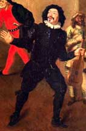

1659
• MOLIÈRE
Le 13 avril : Le personnel de la troupe se modifie. Charles Dufresne se retire, Du Parc et Marquise partent pour le théâtre du Marais. Entrent dans la troupe: La Grange, futur éditeur de Molière, Jodelet, le farceur célèbre, son frère L'Espy, ainsi que Du Croisy et sa femme.
26 mai : Mort de Joseph Béjart.
Juillet : En raison du départ des Italiens, la troupe joue les jours ordinaires, les mardis, vendredis, dimanches.
4 octobre : Retour des Du Parc.
18 novembre : Molière fait représenter une 3e pièce, Les Précieuses ridicules.
• VIE THÉÂTRALE ET LITTÉRAIRE
Mode du portrait littéraire : Divers portraits et Recueils des portraits et éloges (recueil collectif).
Villiers, Le Festin de pierre.
• POLITIQUE ET SOCIÉTÉ
Paix des Pyrénées, entre la France et l'Espagne, qui entérine la défaite des Habsbourgs d'Espagne.
• ARTS, SCIENCES ET RELIGION
Gassendi, Syntagma philosophiae epicuri.
